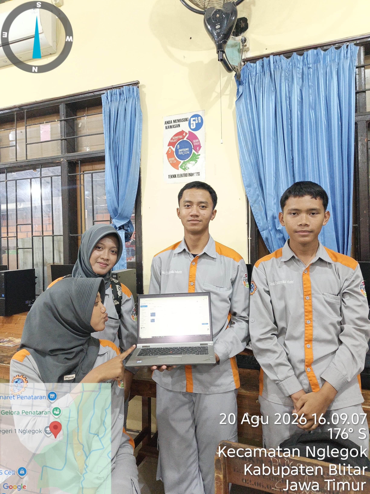

Real-time Security Dashboard
BRANKAS PINTAR
--:--:-- WIB
Status Solenoid Door
TERKUNCI
Sensor Pintu (Magnetic)
TERTUTUP
Deteksi MPU6050
STABIL
Percobaan PIN 4x4
0 / 3 Gagal
Live Log Kejadian Real-Time
- System Sistem siap. Jalur I2C ATmega328 & ESP32 aktif. Now
Status Hardware & Jalur Komunikasi
ATmega328 (Master)
Keypad 4x4, Solenoid, Buzzer, LED
Komunikasi I2C
Jalur Transmisi Data Master-Slave
ESP32 + ESP32-CAM
IoT Gateway & Foto Akses Ilegal
Input Akses & Sensor Pintu
Status Solenoid / Relay Kunci
TERKUNCI
Sensor Pintu (Magnetic Switch)
TERTUTUP
Percobaan PIN Gagal (Keypad 4x4)
0
Sensor Gerak & Posisi (MPU6050)
Status Perpindahan & Guncangan
STABIL / AMAN
Accel X-Axis 0.00
Accel Y-Axis 0.00
Accel Z-Axis 1.00
Kamera Keamanan (ESP32-CAM)
Status Ketersediaan Kamera
READY
Tangkapan Akses Ilegal Terakhir
Belum Ada Tangkapan
Status Aktuator & Indikator
Buzzer (Alarm Audio)
SILENT
LED Indikator Status
HIJAU (STANDBY)
Tangkapan Foto Penyusup (ESP32-CAM)
Pemicu: PIN Salah 3x / Perpindahan
--:-- WIB
Solenoid Door Lock
Solenoid Terkunci
Relay kunci aktif menahan pintu brankas.
Buzzer (Alarm Audio)
Buzzer Non-Aktif
Sistem dalam kondisi aman / standby.
LED Indikator Status
LED Hijau (Standby)
Menandakan status sistem normal.

Sistem Monitoring Keamanan Brankas Pintar Berbasis IoT
Sistem Monitoring Keamanan Brankas Pintar Berbasis IoT Menggunakan ATmega328 dan ESP32 dengan Komunikasi Data I2C serta User Interface Web Online dengan Fitur Deteksi Akses Ilegal dan Perpindahan Posisi Menggunakan ESP32-CAM dan MPU6050
Anggota Kelompok:
01
Arfa Bentur Rohman
No: 12
02
Chika Anggraini
No: 20
03
Dika Yoga Pratama
No: 26
04
Faida Trisma Amelia
No: 30